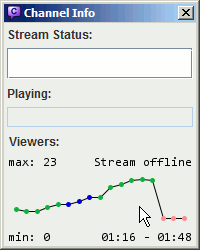
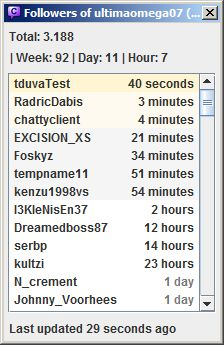

| General usage Chat features Stream features |
Advanced
Miscallaneous
Guides
Also check out the official YouTube Channel with guides and stuff. |
When in a channel, Chatty shows some information about that channel
in the titlebar, e.g.:
[40|59] - GTA:SA Speedruns (Grand Theft Auto: San Andreas)
The first number is the number of people in the chat, the second is the viewercount, followed by the current stream title and game. Anything other than the number of people in the chat is requested from the Twitch API about every two minutes.
Some of the available shortcuts (only work when focus is in the appropriate place):
All command names are case-insensitive. Something like <parameter>
represents a required parameter which must be entered for the command to
work properly (you don't enter the surrounding < >,
they are just there to show it's a parameter). Equivalently [parameter]
represents an optional parameter.
Chat commands:
/me <message> - Send an action message (* nickname says something) to the channel/to <nick> [time] - Timeout the user with the given nickname for "time" seconds (time is optional)/timeout, /ban, /unban,
/slow, /slowoff,
/subscribers, /subscribersoff,
/clear, /mods, /host,
/unhost
just like in normal Twitch Chat/join <channel> - Joins the given channel/part or /close - Leaves the current channel/reconnect - Disconnects and reconnects/fixMods - Temporarily fixes the list of mods (like
/mods but without showing the list of mods in chat)Info commands:
/connection - Show info about the current connection/uptime - Shows how long Chatty has been running/dir - Show the directory the settings (and other stuff) are saved in/wdir - Show the current working directory/openDir - Opens the settings directory in your file browser/openWdir - Opens the current working directory in your file browser/testNotification [channel] - Display a test notification (optionally with channel,
which means right-clicking on the notification will join that channel)/myemotes - Show your subscriber emote codes (only works if you
have joined any channel before, this is only a quick info, better emote
integration maybe to be implemented later)/ffz - Shows the FFZ channel emote codes for the current channel/releaseinfo - Opens the help with the release informationOther commands:
/clearchat - Clears the current chat window of all text/setcolor <name> - Opens the usercolor settings
for the given name/echo <text> - Outputs the given text as a info messageGUI commands:
/settings, /livestreams, /channeladmin,
/channelinfo, /search, /openFollowers,
/openSubscribers - Opens the according dialog/insert <text> - Inserts the given text into the input box at
the current caret position (can be useful for Custom Commands put
in a menu)/insertword <text> - Same as /insert,
but adds spaces so it's seperated from text before and after (if present)/openUrl <url> - Opens the given url/openUrlPrompt <url> - Open the given url after
showing a prompt for confirmationAdvanced commands (not recommended for use unless you know what you do):
/server <host>[:port] - Connect to a custom server/raw <command> - Send a raw command to the server/refresh <emoticons/badges/ffz/ffzglobal/bttvemotes>
- Refresh the Twitch emoticons or badges (current channel) list or
refresh FrankerFaceZ channel emoticons (current channel) or global emoticons.
This downloads the lists from the Internet, so don't use this
unless you need to (it's basicially like pressing reload in your
browser, just only for some stuff)./changetoken <token> - Checks if the given token
is valid and sets it as new token if it isThe login data consists of a username (or account name) and most importantly an access token, which is sort of a revokable password that can also have different types of access associated with it, some of them being:
Once requested from Twitch, the login data is stored locally on your computer along with the other settings of Chatty. Since Twitch gives out the access token per application, any access token for the same account requested with Chatty will be invalidated when you request a new access token.
If getting login data fails, read this guide.
To allow Chatty more access than it already has (e.g. if you haven't selected
editor access before, but you want it now),
you need to request a new access token.
Just go to Main - Connect - Configure login (you have to be disconnected), delete the login
and request it again with the necessary access.
To allow Chatty less access than it already has (e.g. you don't want it to have editor access anymore) you need to first revoke access completely in your Twitch Account Settings, then authorize access again. What will not work is just requesting a new token without selecting the now unwanted access. Twitch will always respond with a token that has at least as much access as the previous one.
The access token is saved in the login file in the settings
directory and can thus be accessed
by anyone having access to your computer.
It allows anyone who obtains it to chat in your name and access the other
things listed above (if you allowed it when getting the token). If you think
the token may have been compromised, please immediately delete it and
request a new one (which will invalidate any previously issued)
or go to your Twitch Settings subsection
Connections
and revoke the accesss there.
There are a few special symbols that are used for users in chat. These are displayed in the userlist and - if usericons are disabled - also in chat.
FrankerFaceZ provides a custom mod icon for some channels. You can disable this in the settings if you want to keep the default one for all channels.
Enter the beginning of a nick of a user that is currently online, then
press TAB to auto-complete it. For example entering jo and
pressing TAB may change it to joshimuz. If there is no
matching nick, nothing will happen. If there is more than one matching nick,
you can cycle through them by pressing TAB repeatedly. For example
jo might cycle between john, jolzi
and joshimuz.
When you send a message, it is automatically saved into a input history, which you can access (while having the cursor in the input box) by pressing the Up-Arrow-key, which will replace the current contents of the input box with the previously send message. You can go further back and forth again using Up-Arrow and Down-Arrow.
Pressing Down-Arrow after entering or changing a message, removes it and stores it in the history, so you can go back to it and send it later. Pressing Up-Arrow after entering or changing a message will replace it with the previous history entry without saving it.
This only applies when you use Twitch Client Version 1
(see Advanced settings, more Information..)
It is possible to join more than one channel with Chatty, however it does have some disadvantages. Several messages from the Chat-Server don't have a channel associated with them (Bans/Timeouts, Specialusers), so while being joined to more than one channel on a single connection, they can't be reliably associated with a channel.
Joining more than one channel means:
If enabled, the history automatically saves channels you join and when you last joined them. By default channels expire from the history after 30 days of not joining them (can be changed).
You can also add channels from the history or any you enter manually to the favorites, which will always be kept until you remove them yourself.
The highlight system allows you to add words or phrases that make chat
messages appear in another color and appear in a seperate window, which you can
open under View - Highlights (you can clear the highlights window
in it's context menu).
The ignore system works very similiar to the highlight system, just that
it hides messages instead of highlighting them. They however also get
added to a seperated window, which you can open under View - Ignored
(you can clear the messagess in the window in it's context menu).
The color of a user is displayed in the User Info Dialog. Color Names are used where possible, HTML Color Codes are displayed in the Tooltip. Colors with asterisk (*) are default colors (the user hasn't set one or hasn't said anything during this session yet). A color in parentheses means it's the original color, while the other color is the corrected one that is actually displayed.
Chatty attempts to make colors more readable automatically by changing them to increase contrast. This doesn't work very well though, although it should work for extreme cases like white on white or black on black.
You can also specify custom colors for certain users or types of users in the settings. Custom colors are indicated by two asterisks (**) in the User Info Dialog.
Chatty supports the default Twitch Emoticons (Normal/Turbo/Subscriber), which should work the same as in normal Twitch Chat. It however also supports FrankerFaceZ, a custom set of emotes that is normally made available in normal Twitch Chat by use of browser extensions. It also supports some of the BetterTTV emotes.
You can enable/disable Emoticons in general (displaying the icons instead
of the text) in the settings under Emoticons. You can also
ignore specific emotes in the same place in the settings.
In chat you can right-click on an emoticon to show some info about it.
Click on the emote code (e.g. FrankerZ) in the context menu
to insert the emote in the inputbox. If it is a subscriber emote, you
also have some more options.
Use Extra - Emoticons or press Ctrl-E to open
the Emote Dialog, which has three different pages:
Favorites page lists emotes you have added to the favorites
via the Emote Context Menu (right-click on an emote in the dialog or chat and
choose Favorite, emotes that already are favorited can be
removed from favorites the same way).My Emotes page lists the emotes you paid for (Subemotes/Turbo).Channel Emotes page lists the emotes that are specific to the current channel
(FFZ and BTTV, if there are any). It also includes
the subscriber emotes of the current channel (if it has any), whether you
can use them or not (but it displays a message if you are not subscribed).Click on an emote to insert it into the current channel inputbox. Double-click on an emote to also close the Emote Dialog in the process, or press ESC or Ctrl-E to close it. Right-click on an emote to show a context menu with some more information/options.
Note that you need to have joined at least one channel for your subemotes/turbo emotes to show up, because only then does Twitch Chat send that information to the client.
The addressbook allows you to add usernames and assign categories to them, which can then be used in other places such as the Usercolor settings or the Highlight settings. Categories cannot contain spaces and are all made lowercase when added/loaded from file.
The addressbook can be edited in several ways:
<Main Menu> - Channels - Addressbook)
where all entries are listed and you can add/edit/remove entries.Addressbook)
where the entry for this user can be directly added/edited/removed. There
you can just select/unselect the categories this user should be in
(although only the categories that are already used in the addressbook
are listed, so if you want to add a completely
new category, you have to add it once by manually editing an entry).In addition to the addressbook dialog and user context menu, there are also some commands to
edit the addressbook. All commands are prefixed with /ab
(e.g. /ab add <name>) or alternatively /users (e.g. /users add <name>):
add <name> - Adds a nameadd <name> <categories> - Adds a name and directly assigns it the given categories, or adds the
categories to the name if it already exists (categories are comma-seperated, without spaces)set <name> <categories> - Sets the categories for this name, adding it if necessary, replacing
any present categories for this nameremove <name> - Completely removes the given nameremove <name> <categories> - Removes the given categories from this name, but leaves
the namechange <name> <categoriesModification> - Prepend categories with +,
- or ! to add, remove or toggle the categories respectively. You can specify more than
one set of categories, for example: change test +a,b -c !d adds a and b, removes c and toggles dget <name> - Shows the categories for this nameinfo - Shows number of entries and used categoriesCategories are given as a comma-seperated list without spaces, e.g. cat1,cat2,cat3.
The following commands edit all entries at once, so they should be used with care:
renameCategory <currentName> <newName> - Renames a category, which means all occurences
of currentName are replaced with newName in all entries. This can also
be used to merge categories, if newName already exists.removeCategory <name> - Removes the category with the given name from all entries/ab add josh vipvip to the user called joshjosh's categories would now be: vip)/ab set josh rainbowjosh to rainbow, replacing
any previously associated categoriesjosh's categories would now be: rainbow)josh kind of colorful in chat, try it out with your own name Kappa)/ab add josh vipvip to the user joshjosh's categories would now be: rainbow,vip)/ab remove josh vipvip from the user josh,
keeping the other categories untouchedjosh's categories would now again be: rainbow)The Channel Info Dialog shows the current stream status of the active stream. The data is requested from the Twitch API in a semi-regular interval, so it can take some time to update.
If the stream is online, the Online: 1h 30m
shows how long ago the stream was started. That time comes directly from the
Twitch API, so it is able to show the correct online time, even if you started
Chatty after the stream started.
If there is a time in parentheses
(like 1h 30m (2h)), then that time denotes how long the stream
was online, but including small offline periods (PICNICs) of at most 10 minutes,
which means that this time is more of a guess of what might be expected as
stream online time and also depends on when Chatty got the data (if you join
the channel after a PICNIC, then it won't include the time before, because it
never received the data for it).
The History is a graph that shows the development of the viewers of the currently active channel and also indicates stream status changes (online/offline/title/game) by different colors.
Hover over points to display the stream status and viewercount at that time. Right-click for a context-menu.
|
There are two ways to change which time range is being displayed:
|
 |
The History is recorded while you have the channel open in Chatty as well as for all followed channels, if you have that feature enabled.
The shown data usually fits to the available vertical space
(so if the min/max viewercounts were 341/403 then only this
range is shown). If you choose Toggle Vertical in
the context-menu, you can switch between the shown range
(min/max) and the full range (0-max).
Chatty can show Notifications when the status of a stream changes.
There is also a Live Streams window (Channels - Live Channels)
that shows the currently live streams. Both these features always include channels you have
joined and - if enabled - channels you have followed. Streams that are
no longer online, or whose channels you have left and you don't follow,
are added to a list that you can open in the Live Streams window context
menu (Removed streams..).
Chatty Notifications are little info boxes that can be shown for stream status changes and highlighted messages. When you left-click on a notification it is closed immediately, right-clicking closes it as well and in addition also joins the associated channel.
Chatty can request a list of streams you follow on a regular basis, so you have both an overview of currently live streams as well as be informed about status changes (offline -> online, title change, game change). This is always available for streams whose channels you have joined in chat, but with this feature enabled, this works for all streams you follow even without joining their channel.
This feature requires Read user info access, so Chatty can
request your followed streams. Read the section about login
to learn more about login data and access.
You can enable/disable this feature in the Settings under Notifications.
This has been moved to it's own page
You can open a list of the Followers of a channel by joining that channel
and then opening the Followers Dialog via Extra - Followers.
It always opens on the currently active channel, or if you are in no channel
at all, your own channel.
You can open a list of your Subscribers by opening the Subscribers Dialog
via Extra - Subscribers. It always opens on your own channel,
because you can only display the Subscribers of your own channel. If you don't
have any Subscribers, it will simply show an empty list (and an error). You
also need to have selected the necessary access when
requesting login data.
You can save the current list to a file by right-clicking on the dialog (not the list) and selecting the format.
Both the Followers and Subscribers Dialog otherwise work in pretty much the same way. Data is only requested as long as you have the dialog open. It is requested in a semi-regular interval and then displays that data in the list (and some stats).
If followers/following is mentioned below, then the same applies for subscribers/subscribing in the appropriate dialog.
|
At the top it shows some stats:
There are different background colors for some entries:
The time has different colors for older entries:
At the bottom, it shows approximately how long ago data was last received, or a short error message if an error occured. |
 |
Everything that determines whether a follower is new or a refollow is saved per session. So if you restart Chatty, it assumes that all followers except from the first request are new. So if you start Chatty, open the Followers Dialog on your channel, it will load the followers for the first time and show none of them as new. Now if it updates a minute later, and there are users it hasn't seen as having followed before, then it assumes these users as new followers.
Now a user of course might have been a follower for a year, then unfollow and follow again. Chances are that Chatty won't notice that and assume a new follower. What it however does is that it only shows each user as new follower once per session. So if someone follows and Chatty shows that user as a new follower, then that user unfollows and follows again, Chatty will notice that the first and the second follow time are different, and will show this user as a refollow (the name slightly grey).
So this basicially just prevents the same user from e.g. making a sound go off (if you have that enabled) several times just by refollowing several times. At most that will happen once per session. Other than that the data is mostly shown just as it comes in from Twitch. It will still show refollows on the top of the list.
The Ignore joins/parts option has been removed, you can use the Twitch Client Version 3 to have the same affect of possibly better performance in huge channels, because that mode doesn't even send a userlist or joins/parts.
You can enable the option Ignore joins/parts in the
Advanced Settings to ignore all joins and parts, this
means the userlist and the usercount will only be based on people who
actually wrote something.
The program will not register joins/parts at all. This can be useful in
really big channels (like 10,000+ users) because having this big a userlist
can reduce performance.
This is not to be confused with the option Show joins/parts
which only affects if joins/parts should be shown in the chat window.
There are a few options you can launch Chatty with, that will override settings loaded from the settings file:
There are a couple of commands that allow you to change settings from
the chat inputbox. You should know what you're doing
before using these. /set <setting> <value>
changes a setting, /get <setting> shows the current value
of a setting, /reset <setting> resets the setting to
the default (hard-coded) value, /clearsetting <setting> sets
string settings to an empty string.
Some of the available settings include (this list may be incomplete/incorrect):
font, fontSize, lineSpacingbackgroundColor,
foregroundColor,
infoColor,
compactColor,
inputForegroundColor,
inputBackgroundColor
timeoutButtons (a comma-seperated list of numbers (time in seconds)
defining the timeout-buttons in the UserInfo dialog)timestamp (a String defining the timestamp format, "off" means no timestamp),
timestampTimezone (set the timezone for the timestamp, e.g. "GMT+2" or "PST")token (the access token to use for connecting)username (the name to use for connecting)usePassword (whether to use a password for connecting
instead of an access token)twitchnotifyAsInfo (show messages from user "twitchnotify" as
info messages)spamProtection (how many messages are allowed, "message/seconds", e.g. "19/30")abCommands (Which Addressbook commands should be allowed for moderators,
comma-seperated without spaces, any of the ones that can be used with the /ab prefix)abCommandsChannel (Enable Addressbook commands for moderators in the given
channel, reset this setting to default to disable feature again)abUniqueCats (Comma-seperated list of categories that
will be unique to one user at a time, only enforced if you use the addressbook add/set
commands, once you specify a unique category with those commands the addressbook command removeCategory
is performed before executing the rest of the command)serverDefault/portDefault, server/port (what server/port to connect to,
first set is the default one that can be changed in the settings dialog and is saved in between
sessions, the second set comes from the commandline parameters and overrides the default ones
when connecting)backupDelay, backupCount (How many days to wait in between
backups, how many backups to keep)livestreamerCommand (command to execute to start livestreamer, by default
just livestreamer)dialogFontSize (Font size for dialogs, currently experimental/for testing,
only User Info Dialog supported)Settings are loaded from files when Chatty is started and saved into files
once it is closed. By default these files are saved in a subfolder
.chatty of your user directory. You can also use the
-cd commandline parameter to use the current working
directory instead. You can find out which folder is used by entering the
/dir command.
Since Version 0.4 of Chatty, the settings are no longer saved in a single
settings-file, but instead several files:
login: Contains the login data, including the access
token, which should be kept confidential.favoritesAndHistory: Contains channel history and
favorites, as well as game favorites.settings: The main file, which contains all customizations
made to Chatty that should not be confidential or private.statusPresets: Contains status (title/game) presets
from the Admin Dialog.Some of the resources that were helpful in the development of this program:
Chatty is using a few libraries/resources made freely available by others:
This application (except for the parts mentioned in the previous paragraph) is released under the MIT License.
Copyright (c) 2014 tduva Permission is hereby granted, free of charge, to any person obtaining a copy of this software and associated documentation files (the "Software"), to deal in the Software without restriction, including without limitation the rights to use, copy, modify, merge, publish, distribute, sublicense, and/or sell copies of the Software, and to permit persons to whom the Software is furnished to do so, subject to the following conditions: The above copyright notice and this permission notice shall be included in all copies or substantial portions of the Software. THE SOFTWARE IS PROVIDED "AS IS", WITHOUT WARRANTY OF ANY KIND, EXPRESS OR IMPLIED, INCLUDING BUT NOT LIMITED TO THE WARRANTIES OF MERCHANTABILITY, FITNESS FOR A PARTICULAR PURPOSE AND NONINFRINGEMENT. IN NO EVENT SHALL THE AUTHORS OR COPYRIGHT HOLDERS BE LIABLE FOR ANY CLAIM, DAMAGES OR OTHER LIABILITY, WHETHER IN AN ACTION OF CONTRACT, TORT OR OTHERWISE, ARISING FROM, OUT OF OR IN CONNECTION WITH THE SOFTWARE OR THE USE OR OTHER DEALINGS IN THE SOFTWARE.